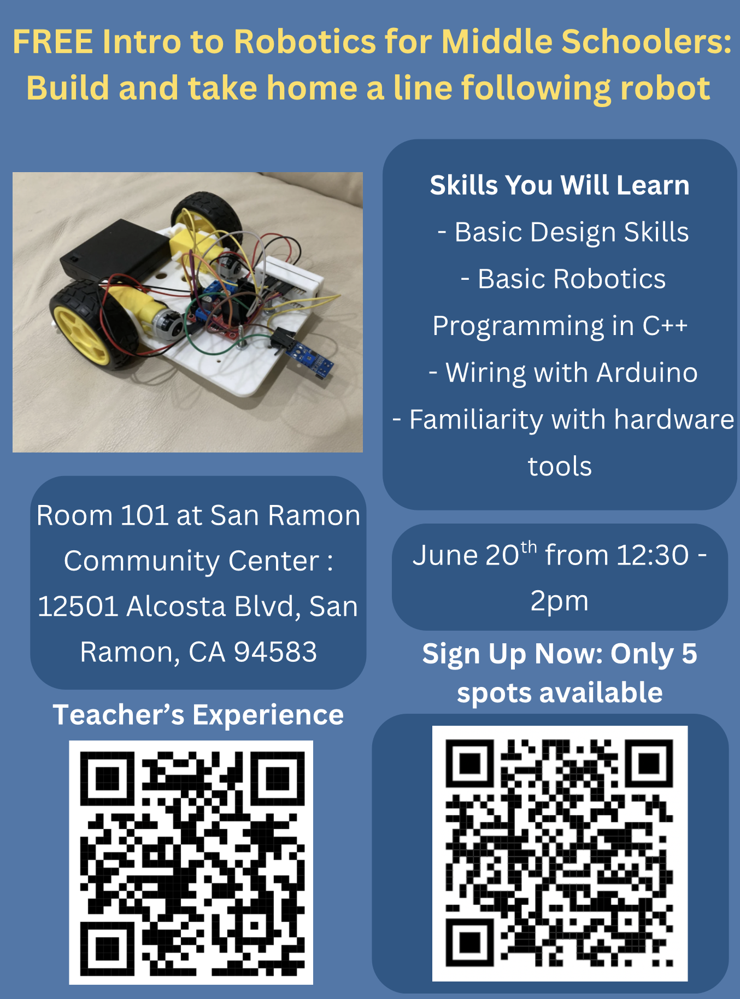

Overview
Free monthly robotics workshops designed to help middle school students move from curiosity to a working robot they can understand and take home.
Community Impact
Since June 2025, I have run free monthly robotics workshops where middle school students learn engineering fundamentals by building, testing, and taking home their own robots. My goal is to make robotics feel accessible, hands-on, and exciting for students who are just beginning to explore STEM.
Free monthly robotics workshops designed to help middle school students move from curiosity to a working robot they can understand and take home.
Many younger students are interested in robotics but do not have easy access to hardware, mentorship, or beginner-friendly build experiences.
I organized the workshops, prepared curriculum, taught robotics concepts, helped students debug their builds, and created a hands-on learning environment.
40+ students taught, 100+ volunteer hours, and 40+ robots built through free community workshops.
Parent Testimonials
"My son Kavish had a very positive experience. He said that you taught really well, were very patient, and explained the concepts well."
— Abhishek, workshop parent"Your initiative has triggered interest in robotics in my 11-year-old daughter. It was her first such event."
— Yash, workshop parent"I enjoyed the class a lot and got to learn and understand the code, assemble the robot, and see it in action."
— Riya, workshop student


